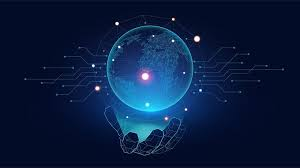

Artificial Intelligence (AI) is the broad field of computer science focused on building systems that mimic human intelligence and cognitive functions, such as reasoning, problem-solving, perception, and decision-making
Machine Learning (ML) is a subset of AI. Instead of using hard-coded rules written by a programmer, ML uses statistical algorithms and mathematical models to analyze data, find patterns, and learn how to make decisions or predictions on its own.
Quantum computing is a rapidly advancing technology that uses the principles of quantum mechanics to solve complex problems much faster than traditional supercomputers
The Internet of Things (IoT) refers to a network of physical objects ("things") embedded with sensors, software, and network connectivity that allow them to collect, share, and act on data without human intervention
Extended Reality (XR) is a collective term for all immersive technologies that merge the physical world with digital or simulated environments